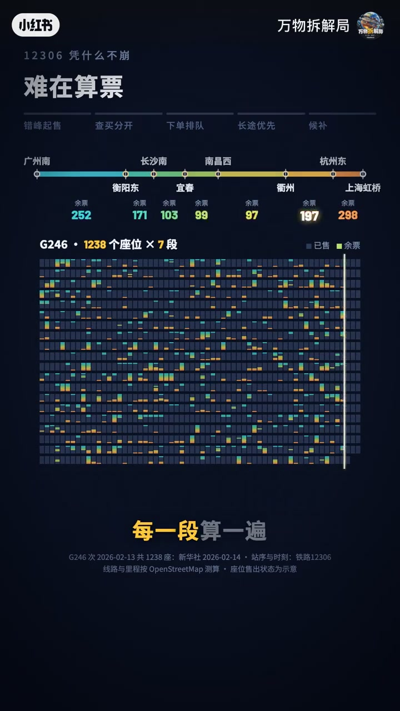
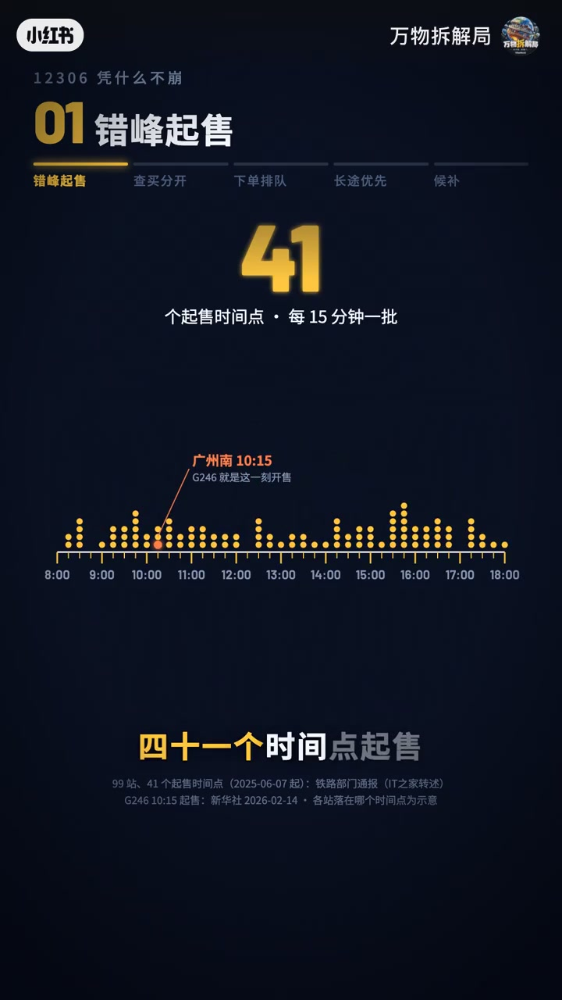
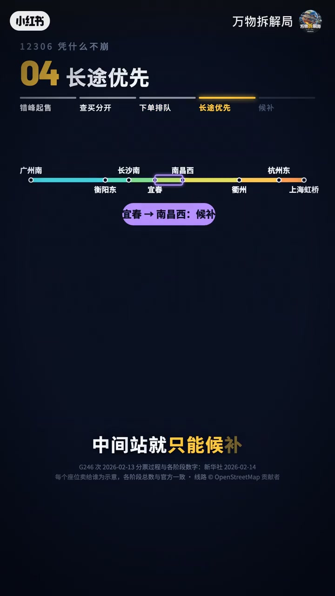
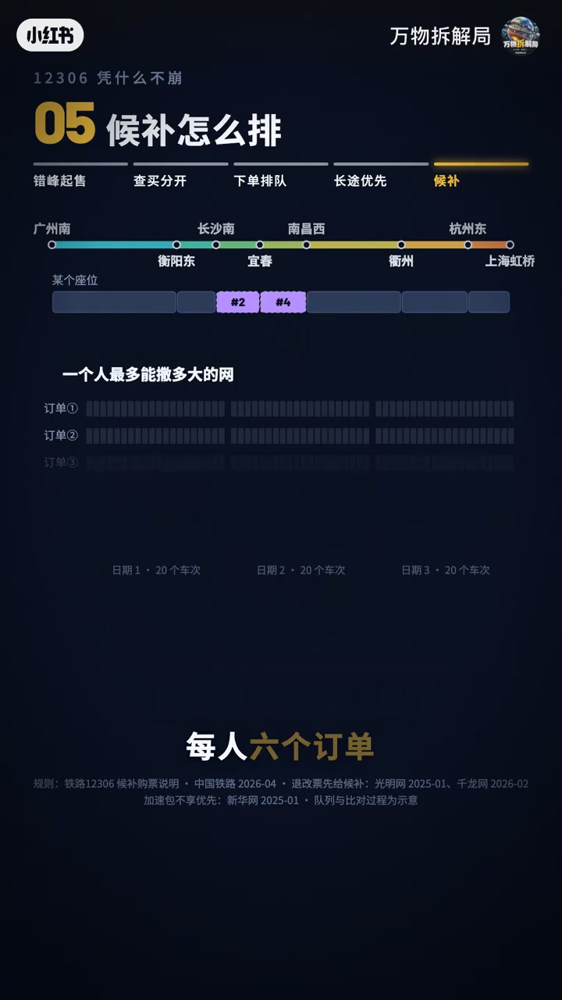

内容要点
「万物拆解局」解释12306高并发：难的不是「卖」，而是按区段算清余票；再用错峰起售、查买分开、下单排队、长途优先、候补五招管流量。前90秒口播 ASR 大面积失效，结构与数据以信息图字幕重建；后段候补规则口播清晰。
知识结构
2012设计能力约100万张/天，对比今日约2973万张量级；难的其实不是卖。
错峰约41个起售点；查买分开；下单排队；长途优先致中间站更多走候补。
退票先给候补，按付款先后匹配车次区间；每人6单×每单最多60个日期车次；加速包官方称不插队。
12306扛量靠「削峰＋算段＋排队＋候补公平」，不是单靠加机器硬抗同一秒抢同一张票。
00:00-01:30算票之难与前四道流量阀
信息图从2012年网上售票说起：设计能力一天约一百万张，与如今单日约2973万张形成对照，并点题「难的其实不是卖」。以 G246 为例展示座位×区段网格：每一段都要算一遍，长途是否可售取决于连续区段是否都空。
导航条五招：01错峰起售（约41个起售时间点、每15分钟一批）；02查买分开；03下单排队；04长途优先（示例中宜春→南昌西等中间站更多只能候补）。00:02–01:30 口播多不可用，以上均依据画面字幕。


01:30-02:06候补：先来后到与加速包边界
第五招候补：票回池先给候补；系统按付款先后从头找，车次和区间对上就兑现。所以别只候补一趟车——每人6个订单，每单最多60个日期加车次。加速包：官方说了不插队（ASR「不查对」）。
今年春运仅候补就兑现约1280万张，一半以上短途。收束：票就这么多，12306管的是先后——错峰起售、查买分开、下单排队、候补先来后到。


完整转录（25段）
以下文本由 Whisper medium 模型自动转录，可能存在少量识别误差，已尽可能修正。
9月23号12306
上海�
回公开池子先给后补
系统按付款先后从对头往后找
谁要的车次和区间对的上就给谁
所以别只后补一趟车
每人6个订单
每单最多60个日期加车次
加速包
官方说了
不查对
今年春运
光后补补补补就兑现了1280万张
一半以上是短途
票就这么多
12306管的是先后
错丰起售
查买分开
下单排队
后补先来后到
你后补成功过吗
等了多久
评论区说说
下期拆什么
你来点